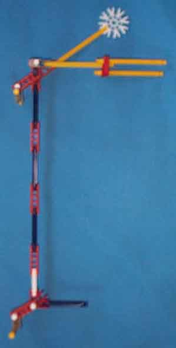

The sense rods are analogous to the clock rods of the Digi-Comp I. It is the sense rods which examine the states of the bits and determine which actuator rods will operate during a given cycle.
|  |
The picture shows a sense rod for a three bit knex-i-comp. The white (arity 8) connector and yellow strut at the top form the sense rod weight which ensures that the sense rod will drop when allowed to. The three yellow struts, red (arity 3) connector and gray (arity 1) connector form the control/actuator linkage , which engages with hardware at the top of the corresponding actuator rod to move the actuator rod off-normal when the sense rod lowers. In the picture, the fork of this linkage is shown rotated slightly so the full fork can be seen. Normally, the fork would be rotated so aas to be flat when the sense rod is mounted on the framework. The sense rod moves up and down via a double hinged swinging arm composed of two orange (arity 2) connectors. One end of the arm is hinged through the center hole of one of the orange (arity 1) connectors of the sense rod proper. The other end is hinged by a white strut to a gray (arity 1) connector which is mounted vertically on the structural framework. There are one orange (arity 2) connector and one blue strut per bit assembly. The blue strut will engage with the red (arity) 3 connectors of the programming hardware when the sense rod lowsers and the red connector is oriented horizontally. The horizontal blue strut mounted at the bottom engages with the sense rod lifter during phases 3, 4, 5 and 6 of the operating cycle. |